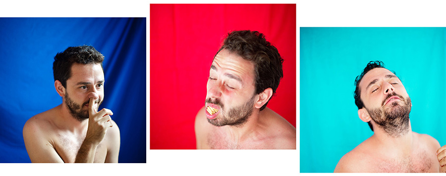
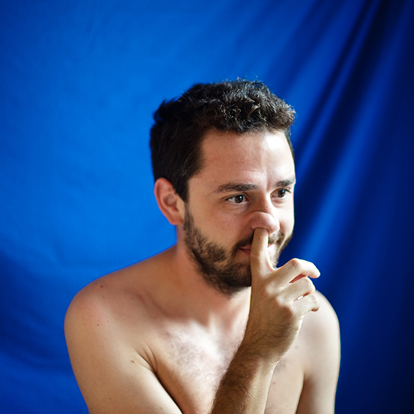
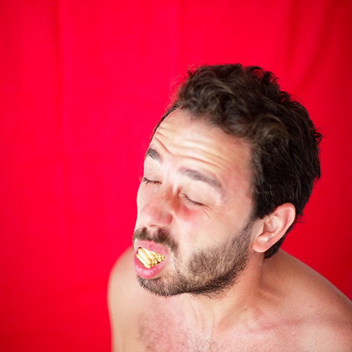
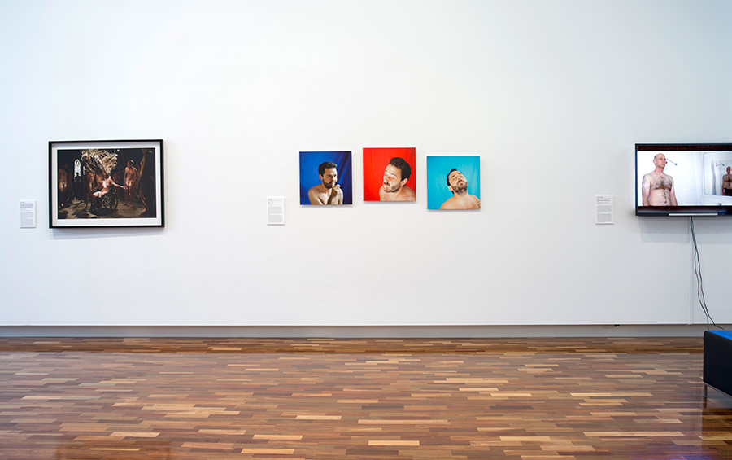

I'm not perfect, I'm flawed
2013“Be yourself; everyone else is already taken.” — Oscar Wilde
I'm not perfect, I'm flawed rejoices facial appearances and gestures, antagonizing the constant struggle to look ideal. Societal self-awareness intoxicates our souls with hypocrisy but privacy liberates the true self within. Paying homage to an exponentially increasing number of DIY photographs and videos posted on social media platforms, I documented myself doing the kind of ordinary things I only do when I am unaware of the onlookers' gaze. This paradoxical blend of the monotonous and the concealed is unnecessary; I do not mind being watched. I am not perfect, I am flawed.




The National Artists' Self-Portrait Prize, 19 October 2013 – 16 February 2014
UQ Art Museum, Brisbane
Curated by Samantha Littley
Judge: Blair French
Artists: Chris Bennie • Natasha Bieniek • Jane Burton • Thea Costantino • Paula Do Prado • James Dodd • Adrienne Doig • Yavuz Erkan • Fiona Foley • Katherine Griffiths • David Griggs • Brent Harris • Petrina Hicks • Anastasia Klose • Michael Lindeman • Jess MacNeil • Jennifer Mills • Kate Mitchell • Archie Moore • Nell • Shaun O'Connor • Tom O'Hern • Ryan Presley • Eugenia Raskopoulos • Victoria Reichelt • Tobias Richardson • Stuart Ringholt • David Rosetzky • Khaled Sabsabi • Yhonnie Scarce • Nalda Searles • Alexander Seton • Sancintya Simpson • Jacqui Stockdale • Darren Sylvester • TextaQueen • David M Thomas • Min Wong